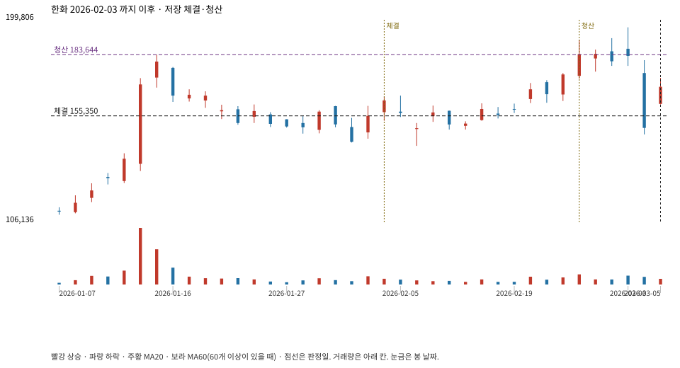

계좌를 다시 돌리지 않았다. 아래는 저장된 주문·체결·청산·비용·손익이다.

{
"case_id": "08e8a5ee88e686d4",
"status": "closed",
"trade": {
"symbol": "000880.KS",
"signal_date": "2026-02-03",
"quantity": 69,
"entry": 155350,
"stop": 141009,
"target": 183644,
"planned_risk": 1014837.7166894979,
"reserved_cash": 10729869.149999999,
"fill": {
"date": "2026-02-04",
"price": 155350,
"fee": 10719.15
},
"exit": {
"date": "2026-02-25",
"price": 183644,
"reason": "target",
"net_pnl": 1928895.4140000008,
"ambiguous_bar": false
}
},
"cost": "research fee 10bp each side, slippage 5bp; amounts below are the stored ledger, not a new run",
"chart": "c\/08e8a5ee88e686d4.svg"
}